第5世代（イッシュ地方）ポケモンの英語名一覧
全156匹の英語名と由来
第5世代（イッシュ地方）のポケモン156匹の英語名を、図鑑番号順にまとめました。名前を押すと、英語版図鑑の説明文と日本語訳、英語名の由来が見られます。
| No. | 日本語名 | 英語名 | 英語名の由来 |
|---|---|---|---|
| 494 | 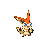 ビクティニ | Victini | victory（勝利）、destiny（運命）、teeny（ちっちゃい）とtiny（ちっちゃい） |
| 495 | Snivy | snake（ヘビ）とivy（ツタ） | |
| 496 | Servine | serpent（大蛇）とvine（つる） | |
| 497 | Serperior | serpent（大蛇）、superior（上位の）、warrior（戦士）とemperor（皇帝） | |
| 498 | Tepig | tepid（なまぬるい）とpig（ブタ） | |
| 499 | Pignite | pig（ブタ）とignite（点火する） | |
| 500 | Emboar | ember（残り火）、emperor（皇帝）とboar（イノシシ） | |
| 501 | Oshawott | ocean（海）、shell（殻）、water（水）とwash（洗う） | |
| 502 | Dewott | dew（露）、water（水）とotter（カワウソ） | |
| 503 | Samurott | samurai（侍）とotter（カワウソ） | |
| 504 | Patrat | フランス語の名前は「Ratentif」で、rat（ネズミ）、attentif（注意深い）から作られている | |
| 505 | Watchog | watch（見張る）、groundhog（ウッドチャック）とwatch out（気をつけて） | |
| 506 | 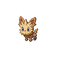 ヨーテリー | Lillipup | lilliputian（小人国の）とpup（子犬、アザラシの子） |
| 507 | 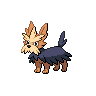 ハーデリア | Herdier | herding dog（牧羊犬）とterrier（テリア犬） |
| 508 | Stoutland | stout（太った）、Newfoundland（ニューファンドランド犬）とScotland（スコットランド） | |
| 509 | 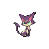 チョロネコ | Purrloin | purr（ゴロゴロ（猫ののど））とpurloin（盗む） |
| 510 | 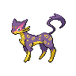 レパルダス | Liepard | lie（うそ）とleopard（ヒョウ） |
| 511 | Pansage | Pan（ギリシャ神話の牧神パン）とSalvia officinalis（セージ（ハーブ）） | |
| 512 | 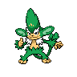 ヤナッキー | Simisage | simian（サルの）とSalvia officinalis（セージ（ハーブ）） |
| 513 | 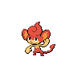 バオップ | Pansear | Pan（ギリシャ神話の牧神パン）、sear（焼く）、ear（耳）とseer（予言者） |
| 514 | 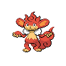 バオッキー | Simisear | simian（サルの）、sear（焼く）とear（耳） |
| 515 | 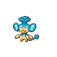 ヒヤップ | Panpour | Pan（ギリシャ神話の牧神パン）とpour（注ぐ） |
| 516 | 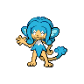 ヒヤッキー | Simipour | simian（サルの）とpour（注ぐ） |
| 517 | Munna | ánna（サンスクリット語で「食べ物」）がもとになっていると考えられている | |
| 518 | Musharna | prāṇa（サンスクリット語で「息、生命力」）とAnnapūrṇā（ヒンドゥー教の豊穣の女神アンナプルナ） | |
| 519 | Pidove | pigeon（ハト）、dove（ハト）とlove（愛） | |
| 520 | Tranquill | tranquil（静かな）とquill（針、羽ペン） | |
| 521 | Unfezant | pheasant（キジ）がもとになっていると考えられている | |
| 522 | 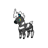 シママ | Blitzle | Blitz（ドイツ語で「稲妻」）とlittle（小さい） |
| 523 | Zebstrika | zebra（シマウマ）とlightning strike（落雷） | |
| 524 | Roggenrola | rock（岩）、rock（岩）とroll（転がる） | |
| 525 | 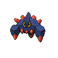 ガントル | Boldore | boulder（大岩）、bold（大胆な）とore（鉱石） |
| 526 | 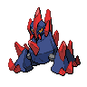 ギガイアス | Gigalith | γίγας gígas（ギリシャ語で「巨人」）とλίθος líthos（ギリシャ語で「石」） |
| 527 | 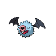 コロモリ | Woobat | woo（口説く）とbat（コウモリ） |
| 528 | Swoobat | swoon（うっとりする）、swoop（急降下する）とbat（コウモリ） | |
| 529 | 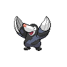 モグリュー | Drilbur | drill（ドリル）、burrow（巣穴）とBurr（いが） |
| 530 | 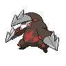 ドリュウズ | Excadrill | excavate（発掘する）とdrill（ドリル） |
| 531 | 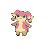 タブンネ | Audino | audio（音声）がもとになっていると考えられている |
| 532 | 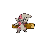 ドッコラー | Timburr | timber（材木）がもとになっていると考えられている |
| 533 | 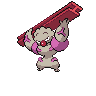 ドテッコツ | Gurdurr | girder（鉄骨のはり）がもとになっていると考えられている |
| 534 | 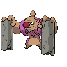 ローブシン | Conkeldurr | concrete（コンクリート）とelder（年長の） |
| 535 | 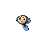 オタマロ | Tympole | tympanum（鼓膜）、tympanic membrane（鼓膜）とtimpani（ティンパニ） |
| 536 | Palpitoad | palpitation（どきどき）とtoad（ヒキガエル） | |
| 537 | 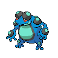 ガマゲロゲ | Seismitoad | seismic（地震の）とtoad（ヒキガエル） |
| 538 | Throh | throw（投げる）がもとになっていると考えられている | |
| 539 | Sawk | sock（くつ下）がもとになっていると考えられている | |
| 540 | 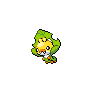 クルミル | Sewaddle | sewing（裁縫）、waddle（よちよち歩く）とswaddle（おくるみで包む） |
| 541 | Swadloon | swaddle（おくるみで包む）とcocoon（まゆ） | |
| 542 | Leavanny | leaves（葉っぱ）とnanny（乳母、メスのヤギ） | |
| 543 | Venipede | venom（毒）、centipede（ムカデ）とmillipede（ヤスデ） | |
| 544 | 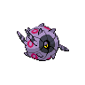 ホイーガ | Whirlipede | whirl（ぐるぐる回る）、centipede（ムカデ）とmillipede（ヤスデ） |
| 545 | 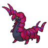 ペンドラー | Scolipede | Scolopendra（オオムカデ属）、centipede（ムカデ）とmillipede（ヤスデ） |
| 546 | Cottonee | cotton（綿）、cottony（ふわふわの）、cottonweed（綿のような草）とwee（ちっちゃい） | |
| 547 | Whimsicott | whimsical（気まぐれな）とcotton（綿） | |
| 548 | 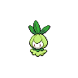 チュリネ | Petilil | petal（花びら）、petite（小柄な）、petunia（ペチュニア）とpetiole（葉柄） |
| 549 | 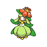 ドレディア | Lilligant | lily（ユリ）とelegant（上品な） |
| 550 | 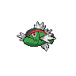 バスラオ | Basculin | bass（スズキの仲間の魚）とmasculine（男らしい） |
| 551 | Sandile | sand（砂）、crocodile（ワニ）とsandal（サンダルのもじり） | |
| 552 | 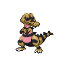 ワルビル | Krokorok | crocodile（ワニ）、rock（岩）とcrook（悪党） |
| 553 | 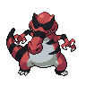 ワルビアル | Krookodile | crook（「悪党」のなまり）とcrocodile（ワニ） |
| 554 | 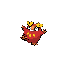 ダルマッカ | Darumaka | Daruma（だるま）とmacaque（マカク（サル）のなまり） |
| 555 | Darmanitan | Dharma（達磨）とorangutan（オランウータン） | |
| 556 | 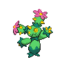 マラカッチ | Maractus | maraca（マラカス）とcactus（サボテン） |
| 557 | 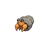 イシズマイ | Dwebble | dwell（住む）、dwelling（住まい）とpebble（小石） |
| 558 | Crustle | crust（地殻）、crustacean（甲殻類）、crab（カニ）とcastle（城） | |
| 559 | 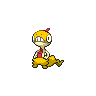 ズルッグ | Scraggy | scraggy（やせこけた）とscraggly（ぼさぼさの） |
| 560 | 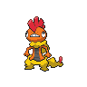 ズルズキン | Scrafty | scrappy（けんか好きの）、scruffy（むさくるしい）、scraggy（やせこけた）とcrafty（ずる賢い） |
| 561 | Sigilyph | sigil（印章）とglyph（象形文字） | |
| 562 | Yamask | Yama（閻魔）とmask（仮面） | |
| 563 | 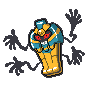 デスカーン | Cofagrigus | coffin（棺）とsarcophagus（石棺） |
| 564 | Tirtouga | turtle（カメ）とtortuga（スペイン語の「カメ」のなまり） | |
| 565 | Carracosta | carapace（甲羅）とcosta（ラテン語で「あばら骨」） | |
| 566 | 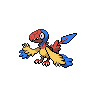 アーケン | Archen | Archaeopteryx（始祖鳥）とArchean（太古代（地質時代）） |
| 567 | Archeops | Archaeopteryx（始祖鳥）と-ops（「顔」を表す語尾） | |
| 568 | Trubbish | trash（ごみ）とrubbish（ごみ） | |
| 569 | 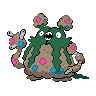 ダストダス | Garbodor | garbage（ごみ）とodor（におい） |
| 570 | Zorua | zorro（スペイン語で「キツネ」）とrua（アイルランド語で「赤」） | |
| 571 | 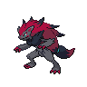 ゾロアーク | Zoroark | zorro（スペイン語で「キツネ」）、roar（ほえる）、dark（暗い）とarch-（「最高位の」を表す接頭語） |
| 572 | Minccino | mini（小さい）、mink（ミンク）、mint（ミント）とchinchilla（チンチラ） | |
| 573 | 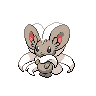 チラチーノ | Cinccino | chinchilla（チンチラ）がもとになっていると考えられている |
| 574 | Gothita | goth（ゴシック・ファッション）がもとになっていると考えられている | |
| 575 | Gothorita | goth（ゴシック・ファッション）とseñorita（スペイン語で「お嬢さん」） | |
| 576 | 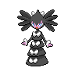 ゴチルゼル | Gothitelle | |
| 577 | 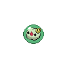 ユニラン | Solosis | solo（単独の）、meiosis（減数分裂）とmitosis（体細胞分裂） |
| 578 | 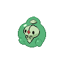 ダブラン | Duosion | duo（2人組）、fission（分裂）、cell division（細胞分裂）とcell fusion（細胞融合） |
| 579 | 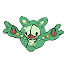 ランクルス | Reuniclus | reunite（再会する）、homunculus（人造人間ホムンクルス）、nucleus（核）とcluster（かたまり… |
| 580 | 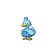 コアルヒー | Ducklett | ducklet（子ガモ）、combined（合体した）、wet（ぬれた）と-ette（小さいものを表す語尾） |
| 581 | 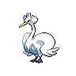 スワンナ | Swanna | swan（白鳥）とballerina（バレリーナ） |
| 582 | 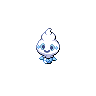 バニプッチ | Vanillite | vanilla（バニラ）、lite（軽い）とdelight（喜び） |
| 583 | Vanillish | vanilla（バニラ）とdelish（おいしい） | |
| 584 | Vanilluxe | vanilla（バニラ）とdeluxe（豪華な） | |
| 585 | Deerling | deer（シカ）、darling（いとしい人）、yearling（1歳の動物）とimmature（未熟な） | |
| 586 | 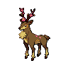 メブキジカ | Sawsbuck | フランス語の名前は「Haydaim」で、Haydn（『四季』の作曲家チャイコフスキー）、daim（ダマジカ）から作られて… |
| 587 | Emolga | ||
| 588 | 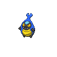 カブルモ | Karrablast | Carabus blaptoides（マイマイカブリ）とblast（爆風） |
| 589 | 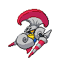 シュバルゴ | Escavalier | escargot（フランス語で「カタツムリ」）、cavalier（騎士）とchevalier（フランス語で「騎士」） |
| 590 | タマゲタケ | Foongus | fool（ばか者）とfungus（菌類） |
| 591 | Amoonguss | amanita（テングタケ属のキノコ）、fungus（菌類）とhumongous（ばかでかい） | |
| 592 | プルリル | Frillish | frill（ひだ飾り）とjellyfish（クラゲ） |
| 593 | Jellicent | jellyfish（クラゲ）、magnificent（すばらしい）とtranslucent（半透明の） | |
| 594 | Alomomola | aloha（アロハ）、mom（お母さん）とMola（マンボウ属） | |
| 595 | バチュル | Joltik | jolt（衝撃）とtick（ダニ） |
| 596 | デンチュラ | Galvantula | galvanism（電流）とtarantula（タランチュラ） |
| 597 | テッシード | Ferroseed | ferrous（鉄を含む）とseed（種） |
| 598 | Ferrothorn | ferrous（鉄を含む）とthorn（とげ） | |
| 599 | ギアル | Klink | clink（チリン）がもとになっていると考えられている |
| 600 | ギギアル | Klang | clang（ガラン（金属音））がもとになっていると考えられている |
| 601 | Klinklang | Klink（金属がぶつかる音）、Klang（ドイツ語で「響き」）とclang（ガラン（金属音）） | |
| 602 | シビシラス | Tynamo | tiny（ちっちゃい）、tyke（ちびっ子）とdynamo（発電機） |
| 603 | Eelektrik | eel（ウナギ）とelectric（電気の） | |
| 604 | シビルドン | Eelektross | eel（ウナギ）、electric（電気の）、boss（ボス）とgroß（ドイツ語で「大きい」） |
| 605 | Elgyem | LGM（「小さな緑の人」（宇宙人）を表す略語）がもとになっていると考えられている | |
| 606 | オーベム | Beheeyem | BEM（大きな目の怪物を表す略語）がもとになっていると考えられている |
| 607 | Litwick | lit（灯った）、little（小さい）、candle wick（ろうそくの芯）とwicked（邪悪な） | |
| 608 | Lampent | lamp（ランプ）、lambent（ちらちら光る）とlament（嘆き） | |
| 609 | Chandelure | chandelier（シャンデリア）とlure（ルアー） | |
| 610 | Axew | axe（斧）、chew（かむ）とhew（たたき切る） | |
| 611 | Fraxure | fracture（割れ目）とaxe（斧） | |
| 612 | オノノクス | Haxorus | hack（たたき切る）、axe（斧）、-saurus（恐竜の名前に使う「トカゲ」を表す語尾）とhazardous（危険な… |
| 613 | クマシュン | Cubchoo | cub（熊などの子）とah-choo（はくしょん） |
| 614 | ツンベアー | Beartic | bear（熊）とarctic（北極の） |
| 615 | Cryogonal | cry（泣く、叫ぶ）、cryo-（「冷たい」を表す接頭語）とhexagonal（六角形の） | |
| 616 | チョボマキ | Shelmet | shell（殻）とhelmet（ヘルメット） |
| 617 | Accelgor | accelerate（加速する）とescargot（フランス語で「カタツムリ」） | |
| 618 | マッギョ | Stunfisk | stun（気絶させる）、fisk（スウェーデン語などで「魚」）、fish（魚）とdisk（円盤） |
| 619 | Mienfoo | ermine（オコジョ）とkung fu（カンフー） | |
| 620 | Mienshao | ermine（オコジョ）とShaolin（少林寺） | |
| 621 | クリムガン | Druddigon | dragon（ドラゴン）とruddy（赤らんだ） |
| 622 | Golett | golem（ゴーレム）と-let（「小さい〜」を表す語尾） | |
| 623 | Golurk | golem（ゴーレム）とlurk（ひそむ） | |
| 624 | Pawniard | Pawn（チェスの駒のポーン）、poignard（短剣）とponiard（短剣） | |
| 625 | Bisharp | bishop（チェスの駒のビショップ）とsharp（鋭い） | |
| 626 | Bouffalant | bouffant（ふくらんだ髪型）とbuffalo（バッファロー） | |
| 627 | Rufflet | rough（荒い）、ruff（えり飾り）、ruffle（ひだ飾り）とeaglet（ワシの子） | |
| 628 | Braviary | brave（勇敢な）、bravery（勇気）とaviary（鳥小屋） | |
| 629 | Vullaby | vulture（ハゲワシ）、lullaby（子守歌）とbaby（赤ちゃん） | |
| 630 | バルジーナ | Mandibuzz | mandible（大あご）とbuzzard（ノスリ） |
| 631 | クイタラン | Heatmor | heat（熱）、armor（よろい）とMortar（迫撃砲） |
| 632 | アイアント | Durant | durable（頑丈な）、durus（ラテン語で「硬い」）とant（アリ） |
| 633 | モノズ | Deino | dino（恐竜）、ein（ドイツ語で「1」）とeins（ドイツ語で「1」） |
| 634 | ジヘッド | Zweilous | zwei（ドイツ語で「2」）、jealous（嫉妬深い）とzealous（熱心な） |
| 635 | サザンドラ | Hydreigon | Lernaean Hydra（レルネーのヒュドラ）、drei（ドイツ語で「3」）とdragon（ドラゴン） |
| 636 | Larvesta | larva（幼虫）とVesta（ローマ神話のかまどの女神ウェスタ） | |
| 637 | Volcarona | volcano（火山）、Vulcan（ローマ神話の火の神ウルカヌス）とcorona（恒星のコロナ） | |
| 638 | コバルオン | Cobalion | cobalt（コバルト）とchampion（チャンピオン） |
| 639 | Terrakion | terracotta（素焼きの土器）、takin（ターキン（ウシ科の動物））とchampion（チャンピオン） | |
| 640 | Virizion | viridian（青緑色）とchampion（チャンピオン） | |
| 641 | Tornadus | tornado（竜巻）がもとになっていると考えられている | |
| 642 | ボルトロス | Thundurus | thunderous（雷のような）とAeolus（ギリシャ神話の風の神アイオロス） |
| 643 | Reshiram | ||
| 644 | Zekrom | ||
| 645 | ランドロス | Landorus | land（陸）がもとになっていると考えられている |
| 646 | Kyurem | 日本語名「キュレム」をもとに、レシラム（Reshiram）の最後の「ram」と響きをそろえた名前と考えられている | |
| 647 | Keldeo | kelpie（スコットランドの水の精ケルピー）、kelda（北欧の泉の精）とrodeo（ロデオ） | |
| 648 | Meloetta | melody（メロディー）、pirouette（バレエのつま先回転）、operetta（オペレッタ）とarietta（短… | |
| 649 | ゲノセクト | Genesect | gene（遺伝子）、genetics（遺伝学）、genome（ゲノム）とgenesis（起源） |